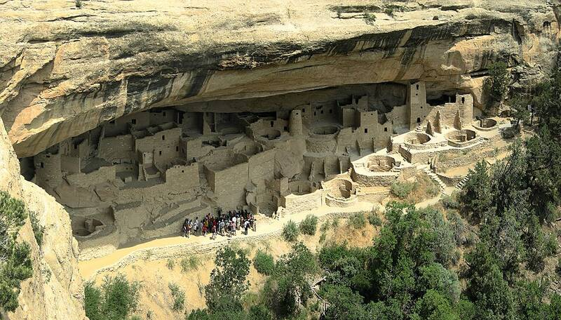

Mesa Verde
Colorado, about AD 600 to 1300

Ancestral Puebloan villages built into cliff alcoves, including the 150-room Cliff Palace. The people left by about 1300, likely because of drought. A UNESCO World Heritage Site. 1
Open in the interactive Watcher
Sources
- Mesa Verde National Park Wikipedia